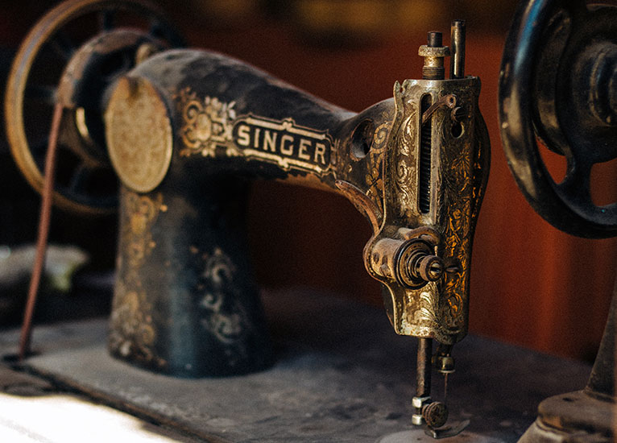

Market
1956 Germany
Ikoflex Camera

The waist-level viewing hood opens and closes in a single action. The image from the taking lens is reflected by a mirror onto a ground glass screen. This model has a foldable magnifying-glass under the hood, and an eye-level sportsfinder.
1920 United States
Singer 27

The 27 series was singer's first use of a vibrating shuttle as a bobbin driver, instead of the transverse shuttle used in the older ‘New Family' machine.